01ภาพรวม
ระบบดาว Isstvan (อิสต์วาน — เอกสารเก่าสะกด Istvaan) ถูก Raven Guard พิชิตเข้าจักรวรรดิตั้งแต่ปี 994.M30 แต่สิบปีต่อมามันกลายเป็นสถานที่ที่ทั้งจักรวรรดิได้รู้ว่า Horus ทรยศ ด้วยสองเหตุการณ์ต่อเนื่องกัน:
Isstvan III Atrocity
Horus ส่ง Space Marine ที่ยังภักดีต่อจักรพรรดิใน 4 Legion ของตนลงไปบนดาว แล้วถล่มด้วยระเบิดไวรัสให้ตายพร้อมประชากรทั้งดาว
Drop Site Massacre (Isstvan V)
Legion ภักดีที่ถูกส่งมาปราบ Horus ถูกLegion ที่คิดว่าเป็นพวกเดียวกันยิงใส่จากด้านหลัง ภายในไม่กี่ชั่วโมง
02Isstvan III: กวาดล้างคนในบ้าน
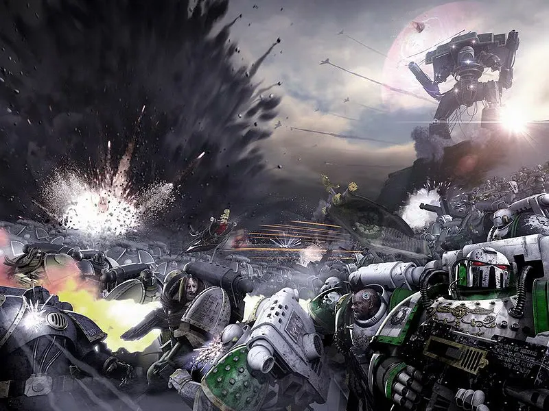
ข้ออ้างในการส่งทัพ
ผู้ว่าการ Baron Vardus Praal แห่ง Isstvan III ถูกลัทธิของ Slaanesh ครอบงำและประกาศแยกตัวจากจักรวรรดิ จักรพรรดิและ Council of Terra ซึ่งยังไม่รู้ว่า Horus เปลี่ยนไป สั่งให้ Warmaster ไปปราบ Horus นำ 4 Legion ไปด้วย: Sons of Horus, Emperor's Children, Death Guard และ World Eaters — Primarch ทั้งสี่คนเข้ากับฝ่าย Chaos แล้ว
กับดัก
Horus ใช้โอกาสนี้กำจัดทหารที่สงสัยว่าจะไม่ยอมกบฏ ใน Legion ของตัวเองและพันธมิตร ทหารเหล่านี้ถูกส่งลงเมืองหลวง Khry Vanak หรือ "Choral City" ด้วยยานดรอปพอด (ไม่ให้ใช้ยาน Stormbird ที่บินกลับได้) และถูกตัดการสื่อสารกับกองเรือ เมื่อการรบดำเนินไป Horus สั่งยิงระเบิดไวรัส Life-Eater ลงมาทั่วดาว

ผู้ที่ทำให้แผนพัง
กัปตัน Saul Tarvitz แห่ง Emperor's Children ไม่ได้ถูกส่งลงไปพร้อมรุ่นแรก และบังเอิญพบแผนการยิงระเบิด เขาขโมยยาน Thunderhawk บินลงไปเตือนพี่น้อง ทำให้ผู้ภักดีจำนวนมากหลบเข้าที่กำบังใต้ดินได้ทัน ไวรัสฆ่าประชากร 8 พันล้านคน ภายในไม่กี่นาที จากนั้นแก๊สจากศพที่เน่าสลายก็ลุกเป็นพายุไฟเผาทั้งดาว
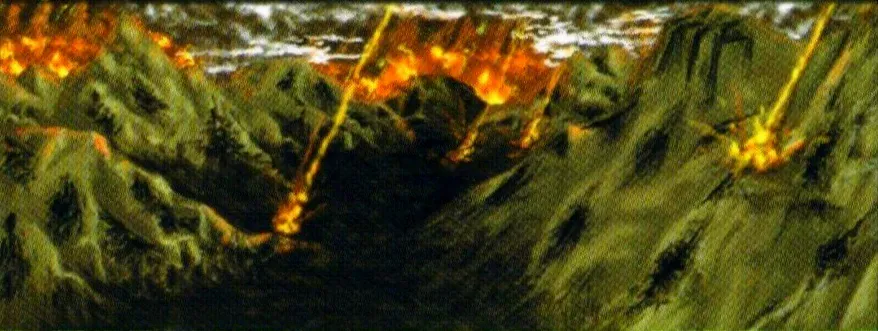
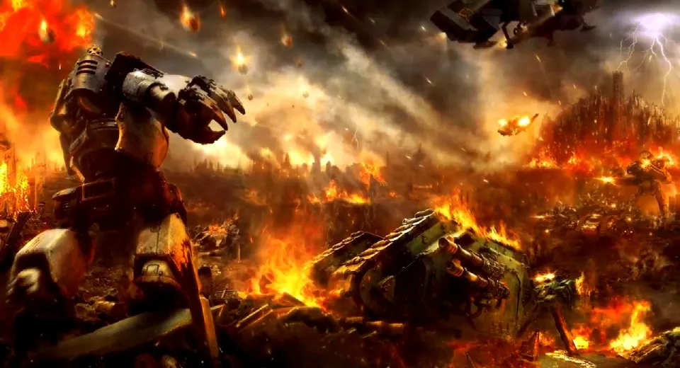
การยืนหยัดครั้งสุดท้าย
ผู้ภักดีที่รอดจากไวรัสยังมีอยู่มาก Angron โกรธจนพา World Eaters ลงไปฆ่าเองโดยไม่รอคำสั่ง Horus จึงต้องส่งทหารจากทุก Legion ตามลงไป แทนที่จะยิงถล่มจากวงโคจร (เพราะจะฆ่า World Eaters และทำให้ Angron เป็นศัตรู) พายุใหญ่ที่ตามหลังไฟทำให้ฝ่ายกบฏส่งกำลังเสริมได้ยาก การรบจึงยืดเยื้อกว่าสองเดือน
ผู้นำฝ่ายภักดีคือ Garviel Loken และ Tarik Torgaddon แห่ง Sons of Horus, Saul Tarvitz แห่ง Emperor's Children และกัปตัน Ehrlen แห่ง World Eaters พวกเขาตั้งรับที่พระราชวัง Precentor จนเกือบทั้งหมดถูกสังหาร ในที่สุด Horus ก็สั่งยิงถล่มจากวงโคจรปิดฉาก
Garviel Loken ถูกพบในเนื้อเรื่องภายหลังว่ายังรอดชีวิต และกลายเป็นหนึ่งใน "อัศวิน" ของ Malcador ส่วน Dreadnought Rylanor แห่ง Emperor's Children ซ่อนตัวอยู่ใต้ซากพระราชวังพร้อมระเบิดไวรัสที่ยังไม่ระเบิด หลายพันปีต่อมาเขาล่อ Fulgrim ที่กลายเป็นปีศาจกลับมาและจุดระเบิดใส่ — แก้แค้นได้แม้ไม่อาจฆ่าปีศาจได้จริง
03เรือ Eisenstein: ข่าวที่หลุดรอด
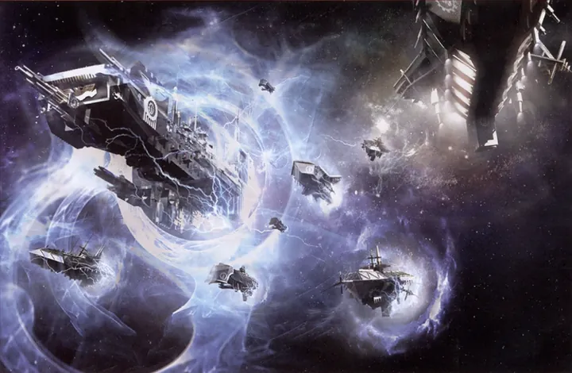
ระหว่างที่การรบบนพื้นดาวยังดำเนินอยู่ กัปตัน Nathaniel Garro แห่ง Death Guard ซึ่งไม่ยอมทรยศ พาผู้ภักดี 70 นายและ Euphrati Keeler (Remembrancer ที่ภายหลังถูกนับถือเป็นนักบุญ) ยึดเรือฟริเกต Eisenstein หนีออกจากระบบ ระหว่างทางเรือถูกยิงโดยเรือรบ Terminus Est ของ Death Guard และถูกปีศาจของ Nurgle บุกระหว่างอยู่ใน Warp แต่ในที่สุดก็นำข่าวไปถึง Rogal Dorn และ Malcador บน Terra ได้
Garro ภายหลังกลายเป็นผู้นำ Knights-Errant หน่วยลับของ Malcador ซึ่งเป็นรากฐานของ Grey Knights และ Inquisition
04แผนตอบโต้ของ Terra และกับดักของ Horus
Rogal Dorn ได้รับมอบหมายจากจักรพรรดิให้วางแผนปราบ Horus เขาสั่ง 7 Legion ไปที่ระบบ Isstvan — ครึ่งหนึ่งของกำลัง Space Marine ทั้งหมด ฝ่ายภักดีเชื่อว่ามีกำลังเหนือกว่าแน่นอน แต่ไม่มีใครรู้ว่าสี่ใน Legion ที่ส่งไปเข้ากับ Horus แล้ว
คลื่นที่ 1 (ภักดีจริง)
- X Iron Hands — Ferrus Manus
- XVIII Salamanders — Vulkan
- XIX Raven Guard — Corvus Corax
คลื่นที่ 2 (ทรยศอย่างลับ ๆ)
- VIII Night Lords — Konrad Curze
- IV Iron Warriors — Perturabo
- XVII Word Bearers — Lorgar
- XX Alpha Legion — Alpharius
Legion ที่ 8 ที่ควรจะไปด้วยคือ Imperial Fists แต่กองเรือถูกพายุ Warp พัดหลงทางและติดอยู่ที่ระบบ Phall ทำให้รอดจากการสังหารหมู่ไปได้ ส่วน Horus ก็ใช้เวลาหลังเหตุการณ์ Isstvan III สร้างป้อมปราการรอที่ ที่ราบ Urgall (Urgall Depression) บน Isstvan V
ก่อนการรบ Fulgrim ได้ไปพบ Ferrus Manus เพื่อนรักบนเรือ Fist of Iron พยายามชวนให้เข้าร่วมกับ Horus แต่ Ferrus ปฏิเสธอย่างรุนแรง ทั้งสองต่อสู้กันและ Fulgrim หนีกลับไป — ความแค้นนี้ทำให้ Ferrus ใจร้อนในวันรบ
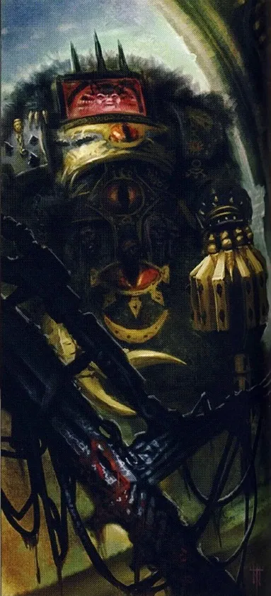
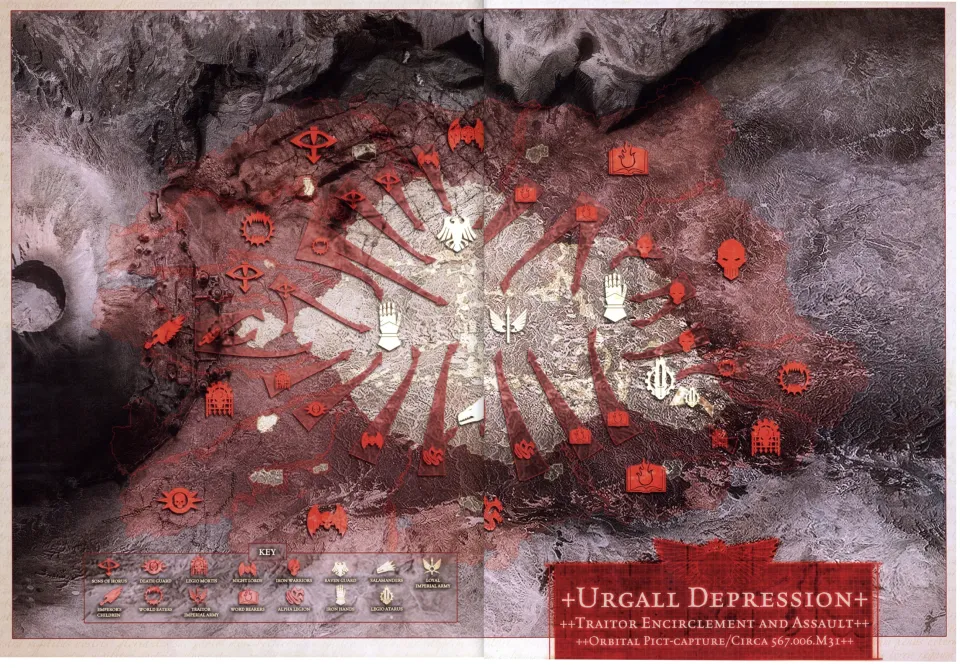
05Drop Site Massacre: สามชั่วโมงแห่งเลือด
คลื่นแรกลงจอด
Iron Hands, Salamanders และ Raven Guard ลงจอดบนที่ราบ Urgall พร้อมกำลังสนับสนุนจาก Mechanicum และ Titan ของ Legio Atarus บุกเข้าใส่แนวป้องกันของ Legion กบฏทั้งสี่อย่างดุเดือด
Ferrus บุกเข้าหา Fulgrim
Ferrus Manus ไม่ยอมรอแผนการรบ นำทหารชั้นยอดบุกตรงเข้าใส่ Emperor's Children เพื่อจัดการ Fulgrim ด้วยตัวเอง ทำให้ Iron Hands ส่วนหนึ่งแยกตัวออกจากแนวหลัก
กับดักเริ่มทำงาน
ฝ่ายกบฏแสร้งถอยเข้าแนวหลัง คลื่นแรกถอยกลับมาจุดลงจอดเพื่อรวมกำลังกับคลื่นที่สองที่เพิ่งลงจอด
คลื่นที่สองเปิดฉากยิง
Night Lords, Iron Warriors, Word Bearers และ Alpha Legion ที่ยึดจุดลงจอดไว้หันปืนใส่ผู้ภักดีที่กำลังถอยกลับมา ผู้ภักดีถูกบีบระหว่างสองฝ่าย ทั้งที่ราบกลายเป็นลานสังหาร
จุดจบของ Ferrus Manus
Ferrus ดวลกับ Fulgrim อดีตเพื่อนรัก และถูกตัดศีรษะ เป็น Primarch คนแรกที่ตายในสงคราม
ผู้รอดชีวิตกระจัดกระจาย
Vulkan หายสาบสูญ Corax บาดเจ็บสาหัสแต่พาลูกน้องหนีขึ้นเขา ฝ่ายภักดีรอดเพียงราว 22,000 นายจากหลายแสน
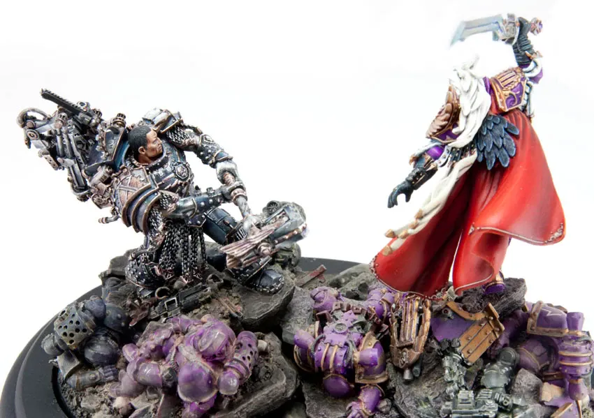
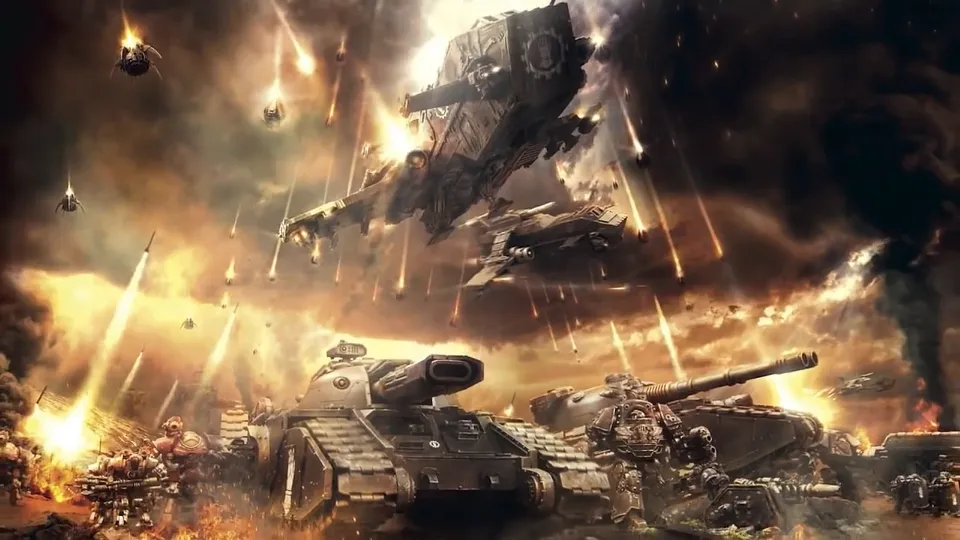
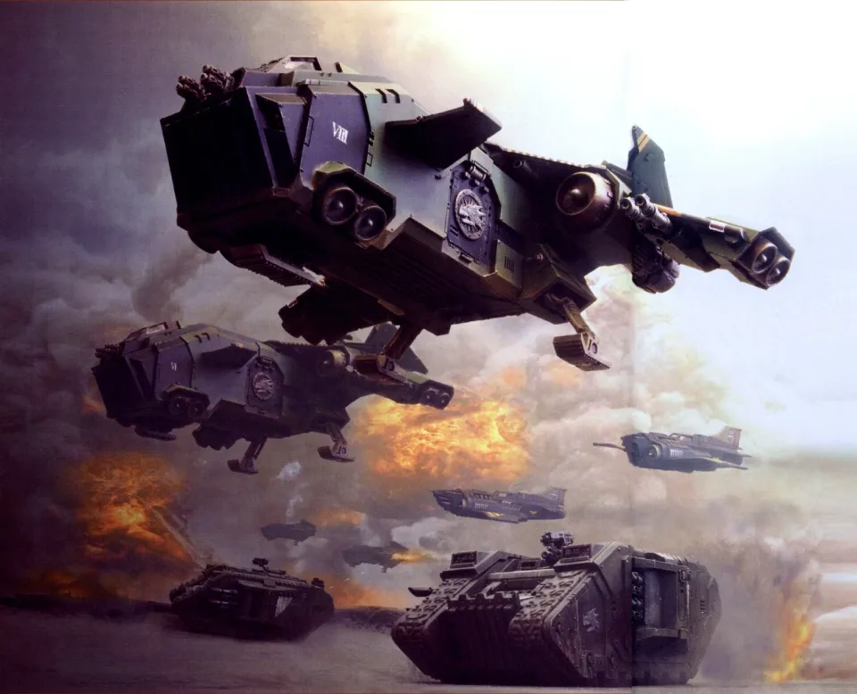
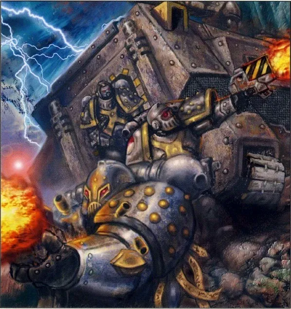
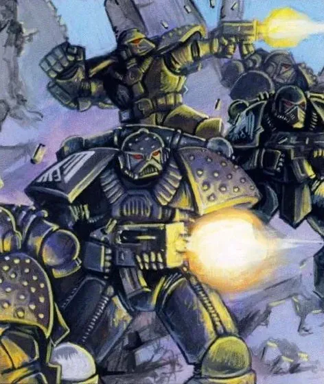
06Raven's Flight และชะตากรรมของ Vulkan
Corax พาผู้รอดชีวิตของ Raven Guard หนีขึ้นภูเขาและซ่อนตัวในเงา ซุ่มโจมตีหน่วยไล่ล่าได้หลายครั้ง แต่หลัง 98 วัน พวกเขาถูก World Eaters ของ Angron ไล่ต้อนจนมุมบนไหล่เขา ขณะที่ทุกคนคิดว่าจบแล้ว ยานรบของ Raven Guard จากดาวบ้านเกิด Deliverance ซึ่ง Commander Branne จัดภารกิจช่วยชีวิตขึ้นเอง ก็ทิ้งระเบิดลงมาและรับผู้รอดชีวิตหนีขึ้นวงโคจร
Vulkan หายไปหลังการรบและถูกเชื่อว่าตายแล้ว แต่ภายหลังเขากลับมาได้หลังการเดินทางยาวนาน ส่วนหมวกเกราะของเขาที่ถูกทิ้งไว้กลายเป็นภาพจำของความพ่ายแพ้ครั้งนี้
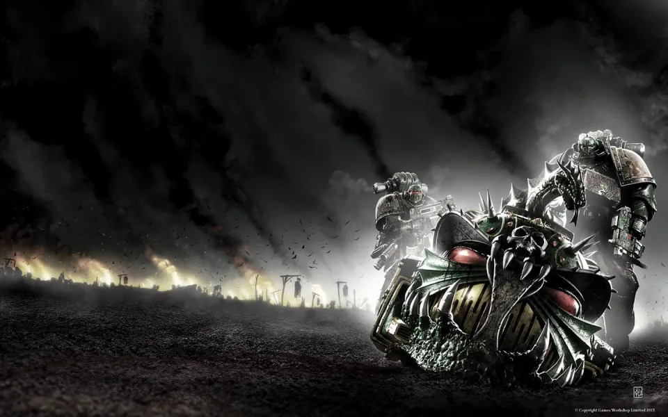
07ผลที่ตามมา
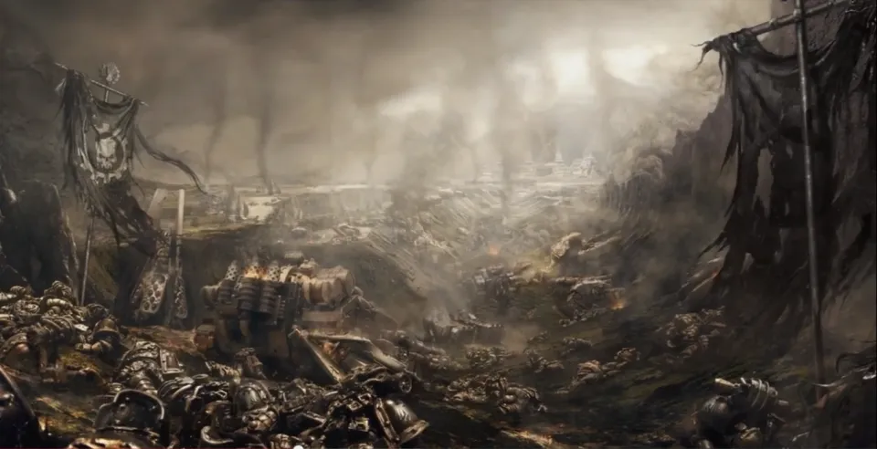
- Shattered Legions — Iron Hands, Salamanders และ Raven Guard เหลือกำลังน้อยจนไม่อาจรบในฐานะ Legion ได้อีกตลอดสงคราม ผู้รอดรวมตัวเป็นกองโจรเรียกว่า "Shattered Legions" ไล่โจมตีฝ่ายกบฏ
- Horus ได้เปรียบทางตัวเลข — ฝ่ายภักดีสูญเสียความได้เปรียบไปในวันเดียว เส้นทางสู่ Terra เปิดกว้าง
- พิธีฉลองบนกองศพ — ฝ่ายกบฏสร้างแท่นสูงกลางที่ราบ Horus ยืนบนยอดท่ามกลางกองไฟเผาศพ ขณะที่ทหารนับหมื่นสดุดี และจุดไฟเป็นรูป "ตาของ Horus" บนเนินเขา
- อาวุธที่ถูกยึด — รถถังและยุทโธปกรณ์ของฝ่ายภักดีถูกซ่อมแล้วนำกลับมาใช้ บางชิ้นยังถูกใช้โดย Chaos Space Marine จนถึงยุค 40K
- Iron Hands ไม่เคยลืม — การตายของ Ferrus ทำให้ Iron Hands รังเกียจ "ความอ่อนแอของเนื้อหนัง" ยิ่งกว่าเดิม ดู Iron Hands
08แหล่งข้อมูลและหมายเหตุ
เนื้อหาหน้านี้สรุปและแปลเป็นภาษาไทยจากบทความใน Warhammer 40k Wiki (Fandom) ซึ่งเรียบเรียงจากหนังสือ Codex, หนังสือชุด Horus Heresy ของ Forge World และนิยาย Black Library ด้านล่างนี้ (ตรวจสอบ ต.ค. 2026)
เนื้อเรื่อง Warhammer ถูกเขียนเพิ่มและแก้ไขมาตลอดหลายสิบปี ปี จำนวน และรายละเอียดบางจุดต่างกันไปตามหนังสือแต่ละเล่ม หน้านี้ใช้ฉบับที่แหล่งอ้างอิงส่วนใหญ่ยอมรับ และบอกไว้เมื่อมีหลายฉบับ